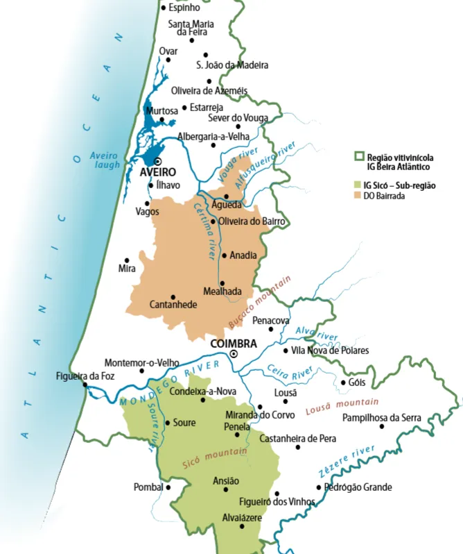
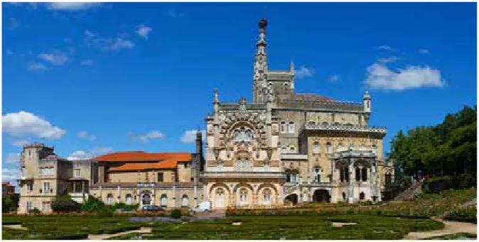
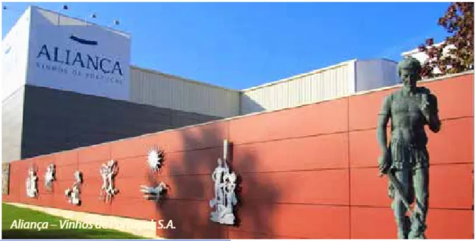
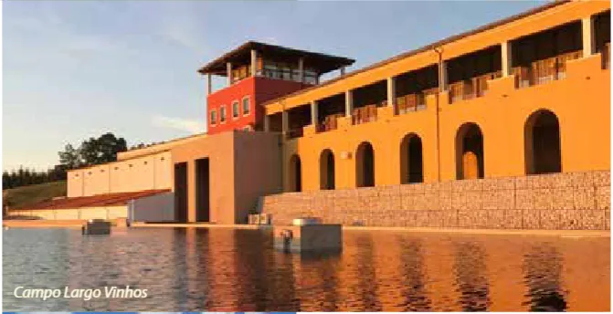
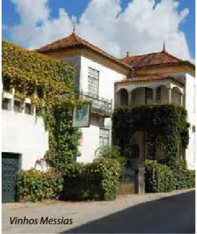

Kapitel 4 · Die portugiesischen Weinregionen
Weinregion Bairrada
Kennzahlen (2022)
Rebfläche: 13.391 ha
Gesamterzeugung: 20.208.000 Liter
Geschichte
Die Weinerzeugung in der Region reicht bis in die Römerzeit zurück, wie die große Vielfalt der in den Granitfels gehauenen Weinpressen (anthropomorphe Pressen) zeigt, in denen damals Wein gemacht wurde. Es wurden Dokumente über Weinerzeugung aus dem 10. und 11. Jahrhundert gefunden. Die Tradition dieser Weine reicht bis in die Regierungszeit von D. Afonso Henriques zurück, der die Anlage von Weinbergen in der Region unter der Bedingung erlaubte, dass er ein Viertel des erzeugten Weins erhielt. Schon unter D. João I. und D. João III. wurden Maßnahmen zum Schutz der Weine dieses Landesteils ergriffen, angesichts ihrer ausgezeichneten Qualität und ihrer gesellschaftlichen und wirtschaftlichen Bedeutung. Die amtlichen Grenzen der Bairrada legte António Augusto de Aguiar 1867 fest.
Terroir
Klima nach Köppen-Geiger: Csb.
Indizes des MCC-Systems (Tonietto & Carbonneau, 2004): heliothermischer Index (HI): +1, Kühle-Nacht-Index (CI): +2, Trockenheitsindex (DI): +1. Das entspricht einem feuchtgemäßigten Klima mit sommerlicher Trockenzeit. Die Winter sind lang und kühl, die Sommer heiß, gemildert durch die Winde aus Ost und Nordost, die in den meernahen Gebieten vorherrschen. Das Klima ist mediterran-atlantisch. Dank der flachen Lage und der Nähe zum Ozean herrscht ein gemäßigtes Klima mit sehr starkem atlantischem Einfluss, häufigen Regenfällen und milden Durchschnittstemperaturen. Zu Frühlingsbeginn gibt es Fröste, ungünstiges Wetter in der Blütezeit und im Mai Hagelgefahr. Die ganze Region ist atlantischen Meereswinden und hoher relativer Luftfeuchtigkeit ausgesetzt, mit entsprechend hohem Risiko für Pilzinfektionen.

Höhe der Weinberge: zwischen 40 und 120 Metern.

Niederschlag: 900–1.100 mm.
Geologie: Die Region erstreckt sich von der Küste bis zu den Bergen Caramulo und Buçaco. Vom Minho bis zur Alta Estremadura ist es eine Region überwiegend intensiver Landwirtschaft mit vielfältigen Kulturen auf kleinen Parzellen; die Rebe nimmt den Ehrenplatz ein, und die Qualität ihrer Weine rechtfertigt die Anerkennung als DOC Bairrada. Die Böden stammen aus verschiedenen Erdzeitaltern, sind aber überwiegend karg. Sie teilen sich vor allem in kalkhaltige Tonböden und lange Sandstreifen und bilden je nach vorherrschendem Element eine große Vielfalt an Bodentypen. Reben wachsen vor allem auf Ton- oder Kalktonböden. Die Region ist größtenteils flach; Weinberge liegen selten höher als 120 Meter. Als dicht besiedelter Küstenstreifen ist der ländliche Besitz in Tausende kleiner Parzellen aufgeteilt; die durchschnittliche Rebfläche übersteigt selten einen Hektar. Das begünstigt große Genossenschaftskellereien und große Weinunternehmen sowie eine Reihe von Erzeuger-Abfüllern, die der Region Ehre machen. Die Bairrada war eine der ersten Regionen Portugals, die Schaumweine einführte und entwickelte, denn das kühle, feuchte Klima mit starkem maritimem Einfluss begünstigt deren Erzeugung: Es liefert Trauben mit wenig Alkohol, aber hoher Säure – beides Voraussetzungen für Schaumwein.
Erzeugte Weintypen
IG Beira Atlântico bzw. Landwein Beira Atlântico:
Weiß, Rosé, Rot, Schaumwein, Perlwein; Unterregion Terras de Sicó.
DO-Bairrada-Weine (VQPRD): Rot, Rot „Clássico“, Weiß, Rosé. DO-Bairrada-Schaumweine (VEQPRD), Aguardente Bagaceira (Tresterbrand).
Regionale Kontakte
Technische Informationen:
Zertifizierungsstelle: Conselho Vitivinícola Regional das Beiras (Regionaler Weinbaurat der Beiras), Av. Eng.º Tavares da Silva, 3780-203 Anadia, Tel.: 231 510 180 –

Website: www.cvbairrada.pt, E-Mail: info@cvbairrada.pt
Kulturelle Informationen zum Wein der Region: Confraria dos Enófilos da Bairrada (Bruderschaft der Bairrada-Weinfreunde), Estação Vitivinícola de Anadia (Weinbaustation Anadia), Tel.: 231 510 330, E-Mail: confrariabairrada@sapo.pt; Museu do Vinho da Bairrada (Weinmuseum der Bairrada), Av. Eng.º Tavares da Silva, 3780-203 Anadia, Tel.: 231 519 780, E-Mail: museuvinhobairrada.m.anadia@gmail.com
Hochschulen und Weinbauforschung: Escola Superior Agrária de Coimbra, Bencanta – S. Martinho do Bispo, 3040-316 Coimbra, www.esac.pt; Estação Vitivinícola de Anadia (Weinbaustation Anadia), Apartado 7, 3781-907 Anadia; Tel.: 231 510 180
Website: http://www.cvbairrada.pt, E-Mail: info@cvbairrada.pt
Zertifizierungsstelle: Conselho Vitivinícola Regional das Beiras; Comissão Vitivinícola da Bairrada (Weinbaukommission der Bairrada), Av. Eng.º Tavares da Silva, 3780-203 Anadia – Tel.: 231 510 180, Fax: 231 510 189;
Website: www.cvbairrada.pt, E-Mail: info@cvbairrada.pt
Weintourismus: Bairrada-Weinroute in der Gemeinde Anadia; Tel.: 231 510 180,
Website: www.cvbairrada.pt. Informationen zu Erzeugern und Abfüllern: http://www.ivv.min-agricultura.pt/np4/1736.html, Jahrbuch 2011, S. 158–160; www.cvbairrada.pt
Für IG Beira Atlântico als Landwein zugelassene Sorten
Rechtsgrundlage: Ministerialerlass Nr. 238-A/2011, Gesetzesdekret Nr. 212/2004, VO (EG) Nr. 1234/2007 (geändert durch VO (EG) Nr. 491/2009).
Rotweine: Água Santa, Alfrocheiro, Alicante Bouschet, Alvarelhão, Aragonez (Tinta Roriz), Baga, Bastardo, Cabernet Franc, Cabernet Sauvignon, Caladoc, Camarate, Campanário, Castelão, Cidreiro, Cinsault, Coração de Galo, Cornifesto, Espadeiro, Gamay, Grand Noir, Jaen, Malvasia Preta, Marufo, Merlot, Monvedro, Moreto, Petit Verdot, Pilongo, Pinot Noir, Português Azul, Rabo de Ovelha Tinto, Rufete, Sousão, Syrah, Tannat, Tinta Barroca, Tinta Carvalha, Tinta Francisca, Tinta Muída, Tintem, Tinto Cão, Touriga Fêmea, Touriga Franca, Touriga Nacional, Trincadeira (Tinta Amarela), Vinhão, Xara, Zinfandel, Alvar Roxo, Folgasão Roxo, Gewürztraminer, Malvasia Fina Roxa und Pinot Gris.
Weißweine: Alicante Branco, Alvar, Alvarinho, Arinto (Pedernã), Arinto do Interior, Assaraky, Azal, Barcelo, Bical, Branca de Anadia, Cercial, Chardonnay, Chenin, Códega do Larinho, Dona Branca, Encruzado, Fernão Pires (Maria Gomes), Folgasão, Folha de Figueira, Fonte Cal, Godelho, Gouveio, Jampal, Loureiro, Luzidio, Malvasia Fina, Malvasia Rei, Pinot Blanc, Rabo de Ovelha, Riesling, Sauvignon, Semillon, Sercial (Esgana Cão), Sercialinho, Síria (Roupeiro), Tália, Tamarez, Terrantez, Trajadura, Uva Cão, Verdelho, Verdial Branco, Viognier, Viosinho und Vital.



Renommierte Weingüter
in der Region: Aliança – Vinhos de Portugal, S.A.
Teil der Weingruppe von José Berardo mit Kellereien in allen besten Weinregionen Portugals. Aliança bewirtschaftet rund 600 Hektar Weinberge, darunter die Quinta dos Quatro Ventos, Quinta da Garrida, Quinta da Terrugem und Quinta das Baceladas. Mehr als 50 Prozent der Erzeugung gehen in den Export. Das Unternehmen verbindet die große Weintradition der Bairrada mit traditionellen unterirdischen Kellern und moderner Kultur in einem eigenen unterirdischen Museum. Sociedade Agrícola e Comercial dos Vinhos Messias, S.A.: 6.000 Quadratmeter Betriebsfläche und rund 160 Hektar Weinberge, 4 Güter mit Weinbergen im Dão (Messias besitzt weitere 200 Hektar in Ferradosa im Douro-Tal). Das Haus bietet eine volle Palette von Weinen aus den besten portugiesischen Regionen und eigenen Quintas.

Adega Luís Pato (in Amoreira da Gândara): Luís Pato, in der Weinwelt als „rebellischer Winzer“ bekannt – die Ente auf seinen Etiketten verrät die portugiesische Bedeutung seines Nachnamens –, ist ein Pionier. In den 1970er-Jahren war er der erste private Abfüller von Weinen aus dem Anbaugebiet Bairrada
und wurde zu einem Vorreiter im Weinexport, der dem portugiesischen Wein international ein neues Image verschaffte. Adega Cooperativa de Cantanhede, C.R.L.: Osvaldo Amado ist der bekannte Kellermeister dieser Winzergenossenschaft, die mehr Auszeichnungen gewonnen hat als jede andere in Portugal. Ihre 500 Mitglieder erzeugen gemeinsam jährlich 6–7 Millionen Kilogramm Trauben. Quinta do Encontro – Sociedade Vitivinícola, Lda. (Global Wines S.A.), Caves São João
Campolargo Vinhos, Anadia.